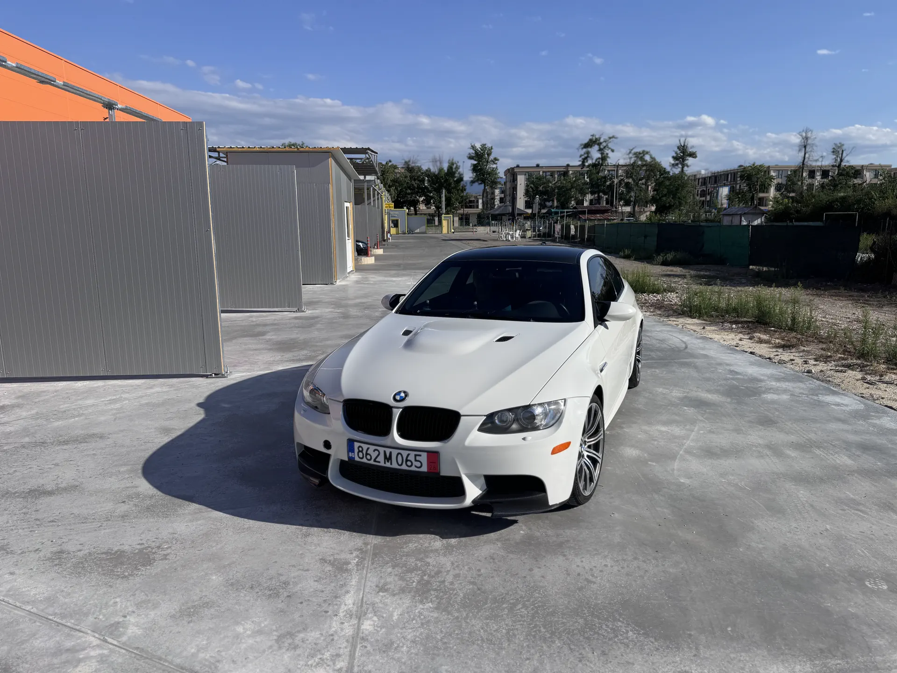

BMW M3 E92 • 6MT • 87,000 km
The naturally aspirated V8 M3 — in one of its most desirable specifications.
S65 V8, 6-speed manual gearbox, factory carbon roof, single hump dashboard, Alpine White III and black Novillo leather. An E92 M3 with direct, driver-focused character and lasting appeal.
The most direct way to experience the S65 and one of the most desirable configurations for the E92 M3.
Naturally aspirated 4.0-litre V8 with 420 hp, linear power delivery and a character unique to this M3 generation.
A clean dashboard without the navigation screen, with a more classic and driver-focused feel.
A classic M colour combination with black Novillo leather that highlights the shape of the coupe.
A defining engineering and visual detail of the E92 M3 Coupe, lowering the centre of gravity.
Low mileage for the generation and a strong basis for both driving and long-term preservation.
Original BMW carbon exterior elements that preserve the authentic character of the car.
BMW Individual black anthracite headliner, making the interior feel more focused and complete.
The Specification
The value is not in one option, but in the complete combination.
Not every E92 M3 delivers the same experience. Here, the 6-speed manual gearbox, S65 V8, factory carbon roof, single hump dashboard and 87,000 km come together in a specification that speaks directly to the enthusiast.
Alpine White III, black Novillo leather, Style 220M wheels and original exterior carbon elements preserve the characteristic OEM look. The interior trim has been retrimmed in carbon-pattern leather with contrast stitching — a discreet detail that complements the sporting character of the cabin.
The E92 in M History
An M car from an era that will not be repeated.
The E92 is the only M3 generation powered by a naturally aspirated V8 and the last coupe to carry the M3 name before the move to M4. It occupies a special place between the classic analogue M cars and the newer turbocharged generations.
Examples combining a manual gearbox, carbon roof, single hump dashboard, lower mileage and preserved character are becoming increasingly difficult to find. The appeal lies both in the driving experience and in the opportunity to preserve the car over time.
Highlights at a glance
- 87,000 kmLow mileage for the generation.
- 6MT6-speed manual gearbox.
- S65 V8Naturally aspirated 4.0 V8 with 420 hp.
- Carbon roofFactory carbon-fibre roof.
- Single humpClean dashboard without navigation.
- DocumentationCARFAX and original book pack available.
Gallery
The lines, stance and details of the E92 M3.
Specification
The essential details in one place.
Full Equipment List
Equipment and details selected around the character of the car.
Comfort
- Comfort Access
- Electric front seats with memory
- Heated front seats
- Automatic climate control
- Cruise control
- Auto-dimming interior mirror
Lighting and Security
- Xenon headlights
- Adaptive headlights
- Headlight washers
- Rain sensor
- Lighting package
- Alarm system
Audio and Connectivity
- BMW Professional radio
- HiFi System Professional
- USB / audio interface
- Preparation for CD changer
- Preparation for satellite tuner
- Mobile phone preparation USA / Canada
M Details and Interior
- M Double Spoke Style 220M wheels
- BMW Individual Anthracite headliner
- Factory carbon roof
- Single hump dashboard without navigation
- Original BMW carbon exterior elements
- Interior trim retrimmed in carbon-pattern leather with stitching
- Ski bag / long-load opening
- Canada specification / English language version
Factory M Character
Carbon roof, wide arches and quad exhausts — the details that make the E92 M3 instantly recognizable.
The coupe proportions, broad rear stance and carbon roof give the car a presence that does not depend on trends. This is the design that made the E92 one of the most recognizable modern M coupes.
Prepared and serviced at 87,000 km
- Fresh Liqui Moly 10W-60 engine oil and new MANN oil filter
- Coolant replaced
- A/C system checked and recharged; the climate control operates correctly
- 3D wheel alignment completed
- New original Stabilus bonnet struts
- The engine runs cleanly and evenly, with no abnormal knocking and no visible oil leaks
- The suspension feels tight, with no noises or excessive movement
- The brake discs have no pronounced lip and the pads retain ample material
- The body and underside are exceptionally clean, with no visible corrosion
History and documentation
- Canadian-market car
- Available CARFAX with no reported salvage/rebuilt title brands, total loss, structural damage or airbag deployment
- The CARFAX includes a minor incident from 2025, after which the car was repaired; the full report and repair details are available for serious interest
- The original book pack is included
Viewing and Contact
Interested in the E92 M3?
The car can be viewed by appointment. For serious interest, we can provide the full CARFAX report, additional photographs and details of the preparation and repairs completed.